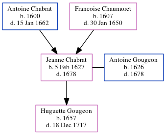

Jeanne Gougeon (née Chabrat) 1627 - 1678
[ Home ] | [ Calendar ] | [ Surnames Index ] | [ Census Index ] | [ Family History ]The child of Antoine Chabrat and Francoise Chaumoret, Jeanne Chabrat, the 10 times great-grandmother of Michele Copp (née Phillips), was born in Loudon, Vienne, Poitou-Charentes, France on Feb 5, 16271 and married Antoine Gougeon (with whom she had 1 child, Huguette) in 16561.
She died in 1678 in Port Royal, , Nova Scotia, Canada.
Parents
- Antoine was born in 1600
- Francoise was born in 1607
Children
- Huguette was born in 1657
Citations
- U.S. and International Marriage Records, 1560-1900 Online publication - Provo, UT, USA: The Generations Network, Inc., 2004.Original data - This unique collection of records was extracted from a variety of sources including family group sheets and electronic databases. Originally, the information was deriv
Family Tree
Generated by ged2site. Last updated on Jun 6, 2024